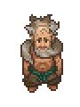

Dig
| Dig | |
|---|---|
 | |
Basic Information
| |
Location :
|
Village |
Role :
|
Vagabond |
Trade Information
| |
Type of Goods :
|
Hemp products |
Funds :
|
|
Daily income :
|
|

Dig is a vendor outside the village who lives in a large barrel and sells hemp products. He is located to the east of the village, near the fork for the lighthouse and the beach. Upon speaking to him he will say "Ding dong. Bing Bang Bong. Dig I am, am I?". After that the player can trade.
Dig's name and habit of living in a barrel outdoors seem similar to those of ancient Greek philosopher Diogenes, who also chose to live in this fashion.
Quests
Cake recipe
Upon first meeting you he will ask you to bring him 5×
Honey. (There are two trees with honey just above a hill in the north-west direction from your house.) He will teach you the cake recipe after doing that.
Trades
You have immediate access to his Tier II wares.
Selling
|
|
Purchasing
| Item | Base Cost |
|---|---|
| Firewood |
Easter Egg
The cake is a lie
In dialog he says "... we will tell him a sweet lie" just before giving you cake recipe - therefore the cake is a lie. This might be a reference to the video game Portal.
Diogenes the Cynic
Ancient Greek philosopher Diogenes the Cynic was said to have slept in a large ceramic pot. May be a reference, considering the names.
Stranger Sins DLC
The Stranger Sins DLC adds a lot of information in his backstory:
- His real name is Digus.
- He is the adopted father of Horadric.
- In the times before the Ancient contract was signed, more than 200 years ago, he was one of the main leader of the cult of the Ancient God, with the three priestesses. He was in particular in charge of the ceremony to bring the dead till the Bridge of the Dead, and was the keeper of the six keys of the Ancient Portal. He was robbed of the keys by Horadric.
- After the treason of Horadric, Krezvold, Lucius, and Jove, he leads in Town the faction loyal to the Old Faith, against The Master.
- Immensely learned, he is the main contributor of the Necronomicon.
- He his the one who have negotiated the Ancient Contract with the Ancient God, after the undead apocalypse caused by the destruction of the Bridge of the Dead by Pontiff Lucius.
- Like the six signatories of the Ancient Contract (Horadric, Krezvold, three unnamed priests, and himself), he is immortal.
- After the signature of the Ancient Contract, he chose to remain outside the new society, making believe he's half crazy.
| |||||||||||||||||||||||||||||